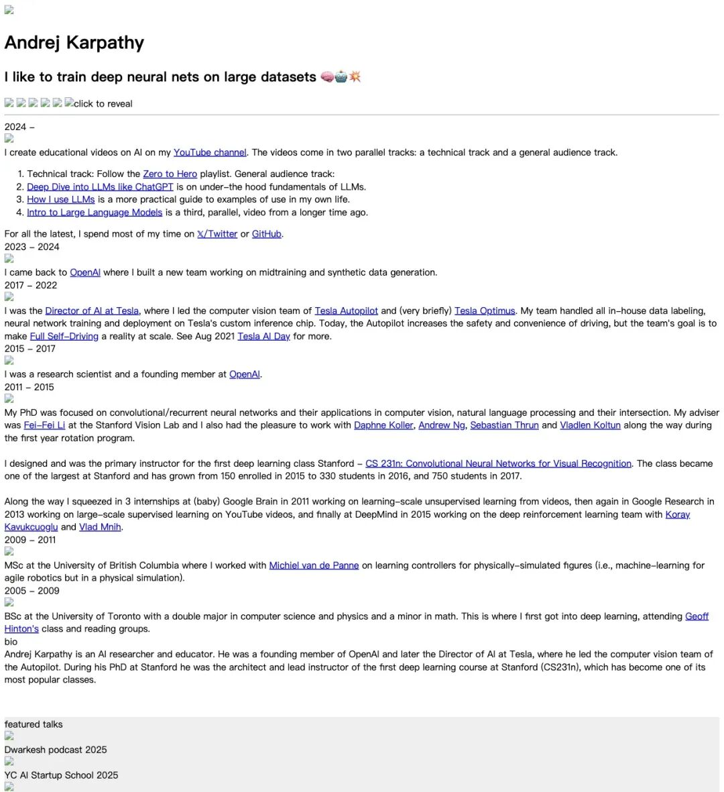
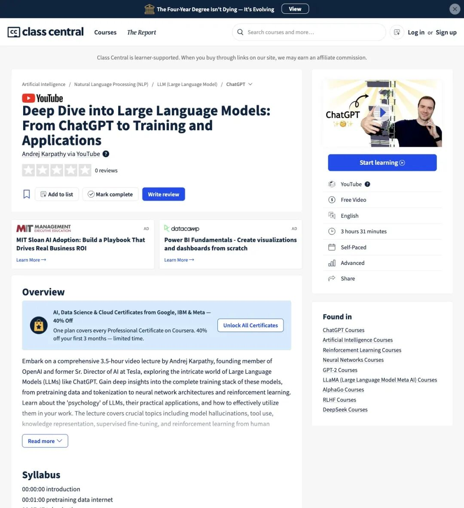
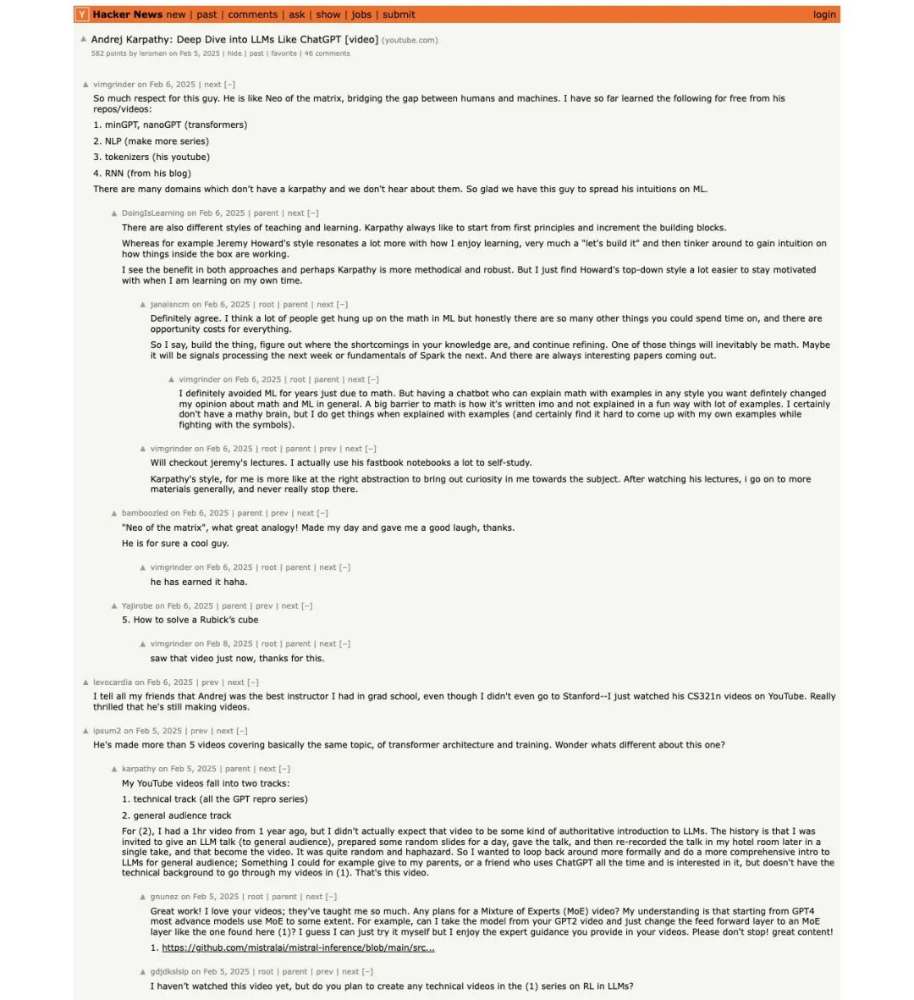

【导读】Karpathy 去年发布在 YouTube 上的免费 LLM 长课《Deep Dive into LLMs like ChatGPT》，最近又被 X 上的 AI 博主翻出来热推。这门课上线一年多，YouTube 播放量已超 640 万，覆盖预训练、tokenization、Transformer 内部结构、幻觉、工具使用、DeepSeek-R1 到 RLHF 的完整训练链。它凭什么反复出圈？
又被翻出来了
2026 年 5 月 23 日，X 上的 AI 博主 AilaunchX 发了一条帖子：
"ANDREJ KARPATHY COULD HAVE CHARGED $2,000 FOR THIS COURSE. He put it on YouTube."
「Karpathy 本可以为这门课收 2000 美元，但他把它放在了 YouTube 上。」
▲ AilaunchX 的 X 帖子，采集时约 2.4 万浏览
帖子把 Karpathy 这门课描述为"3 hours of the most comprehensive LLM education that exists anywhere at any price"——这当然是博主的主观评价，但它确实戳中了一个真实需求：很多人学了一堆 prompt 技巧和 agent 框架，却从来没搞清楚 LLM 到底是怎么训练出来的。
这门课原始发布在 2025 年 2 月，Karpathy 原帖浏览量超过 237 万，点赞突破 2 万。一年多以后，它再次被推到学习者面前。
这门课到底讲了什么
先看课程本身。
Karpathy 原帖写得很明确：
"This is a general audience deep dive into the Large Language Model (LLM) AI technology that powers ChatGPT and related products."
「这是面向一般受众的 LLM 技术深度讲解，覆盖支撑 ChatGPT 及相关产品的大语言模型技术。」
他在个人官网上进一步说明，这门课属于general audience track（通识轨），讲的是 LLM 的under-the-hood fundamentals（底层基本原理）。

▲ Karpathy 官网课程页，可见 general audience track 与技术轨的划分
根据 Class Central 的章节索引，整门课的结构是这样的：
预训练阶段（Pretraining）
00:01:00 — 预训练数据：互联网 00:07:47 — Tokenization 00:14:27 — 神经网络 I/O 00:20:11 — 神经网络内部结构 00:31:09 — GPT-2：训练与推理 00:42:52 — Llama 3.1 基础模型推理
有监督微调阶段（SFT）
01:20:32 — 幻觉（Hallucinations）、工具使用、知识与工作记忆
强化学习阶段（RL）
02:14:42 — 强化学习 02:27:47 — DeepSeek-R1 02:42:07 — AlphaGo 02:48:26 — RLHF 03:21:46 — 总结
从数据采集、token 切分、网络结构，到推理、微调、幻觉机制、工具调用，再到强化学习和 RLHF——一条完整的 LLM 训练链，3.5 小时走完。

▲ Class Central 课程页：Free Video、3 hours 31 minutes、Self-Paced、Advanced
640 万播放背后的社区反应
YouTube 上，这门课采集时播放量已超过640 万，点赞超过11.4 万。
评论区里，一条高赞评论说：
"In an era where almost everyone is trying to monetize every ounce of knowledge they have, this pure genius is releasing a 3-hour, 31-minute, and 23-second-long video for free..."
「在几乎所有人都试图把知识变现的时代，他把这么长的高密度视频免费放了出来……」
Hacker News 上也有两轮热度较高的讨论，原始视频帖超过 580 points，后续的 TL;DR 总结帖又拿到 380 多 points。

▲ HN 原始讨论帖：582 points，开发者在评论区讨论第一性原理学习路线
HN 评论区反复提到的一个词是first principles——从第一性原理出发。开发者们把这门课和 Karpathy 之前的 minGPT、nanoGPT、tokenizers、RNN blog 等免费项目放在一起看，认为他的教学特点就是把复杂系统拆成最小可理解的模块。
为什么这门课能反复出圈
Karpathy 的教育内容有一个长期特征：从零构建。
CS231n 是这样，minGPT / nanoGPT 是这样，Zero to Hero 系列也是这样。他的 YouTube 频道目前有约 144 万订阅者，技术轨和通识轨两条线并行推进。
但《Deep Dive into LLMs like ChatGPT》走的路线不太一样。它不要求观众一步步写代码，而是给非专业或半专业受众建立一张 LLM 的系统地图：数据从哪来、token 怎么切、网络内部在做什么、推理怎么跑、微调改了什么、幻觉为什么出现、工具怎么调、强化学习和 RLHF 分别在哪个环节起作用。
AilaunchX 的帖子里还提到：
"The engineers who understand this build things the ones who only use the tools cannot even conceive of."
「理解底层的工程师能构建出只会用工具的人根本想象不到的东西。」
这句话当然有夸张成分，但它指向了一个真实的行业焦虑：当市面上大量课程都在教 prompt engineering、agent workflow、RAG pipeline 的时候，真正从预训练到 RLHF 完整讲一遍底层原理的免费内容，确实稀缺。
冷静看：这门课能做到什么，不能做到什么
值得提醒的是，AilaunchX 帖子里的"$2,000"是博主的主观价值判断，Karpathy 从未公布过任何收费计划。"most comprehensive LLM education that exists anywhere at any price"也只是帖主的推荐评语。
这门课的定位，用 Karpathy 自己的话说，是面向 general audience 的底层原理讲解。Class Central 把它标注为Advanced，说明虽然尽量通俗，但主题跨度很大。
看完这 3.5 小时，你可以建立起 LLM 训练链的概念地图，理解每个环节在做什么、为什么这样做。但它不是带作业的完整课程，也不能替代实际工程经验。如果要进入 Karpathy 的技术轨，后面还有 Zero to Hero 系列、minGPT/nanoGPT 等项目在等着。
不过，作为一门免费、公开、覆盖完整训练链的 3.5 小时讲座——它在 2025 年 2 月上线时引发了大量讨论，2026 年 5 月又被推回到学习者面前。640 万播放、11.4 万点赞，Hacker News 两轮近千点讨论。
这门课的长期价值，社区已经用脚投票了。
课程链接：https://www.youtube.com/watch?v=7xTGNNLPyMI
— END —